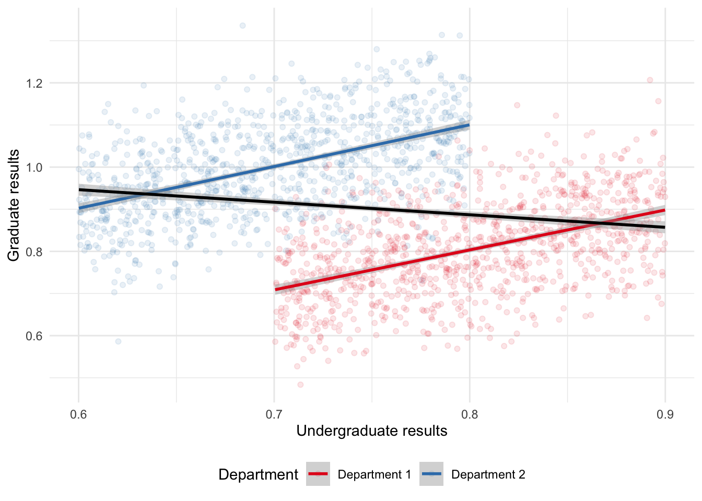
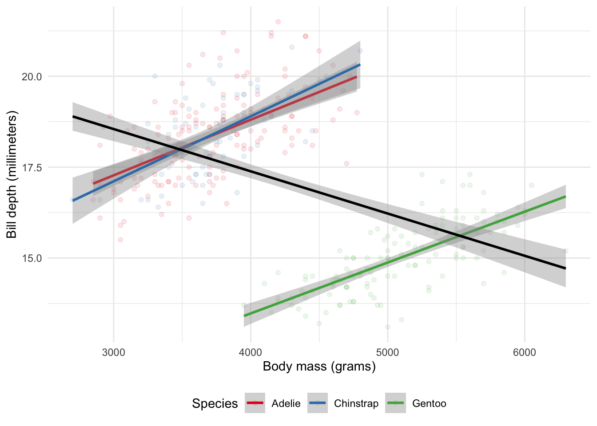
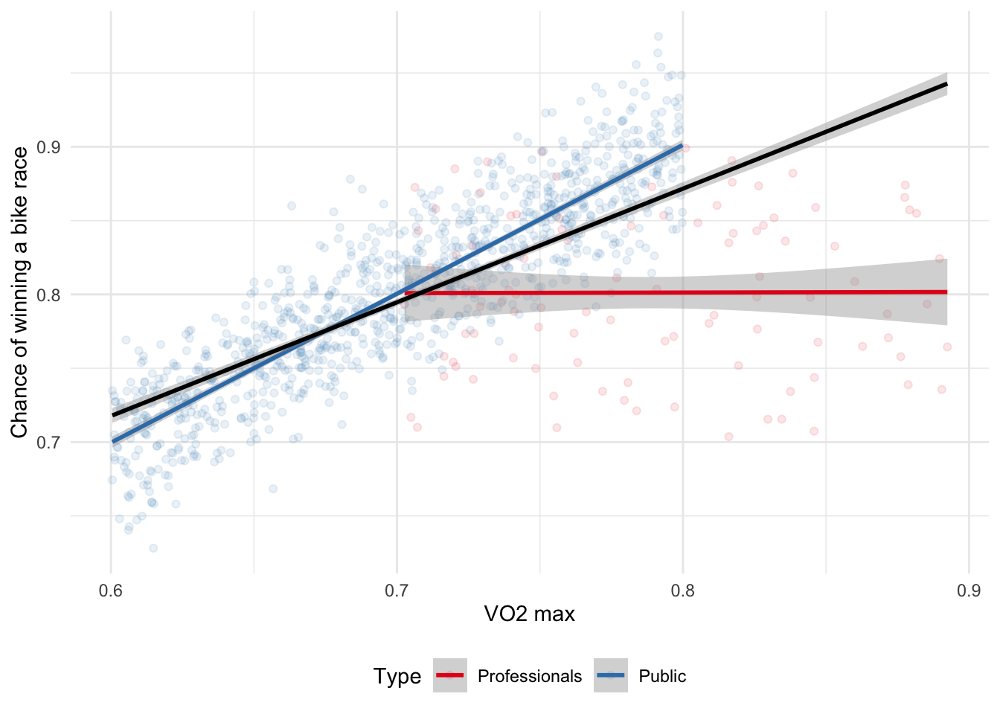
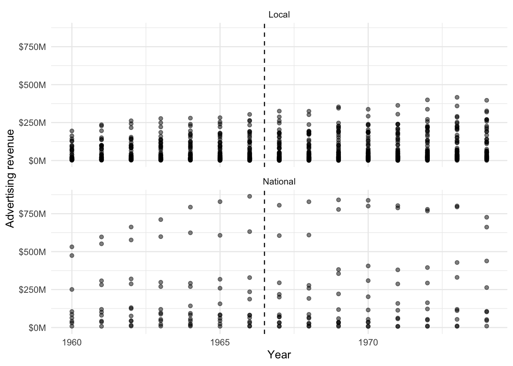
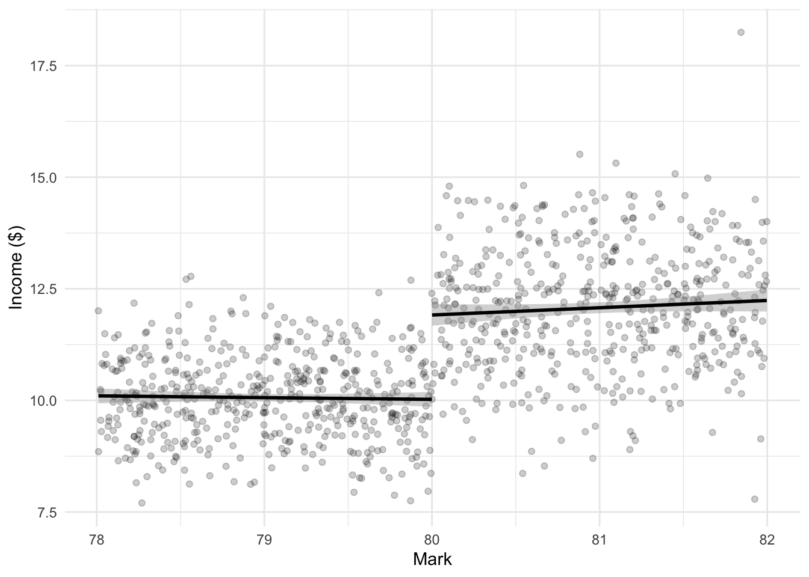
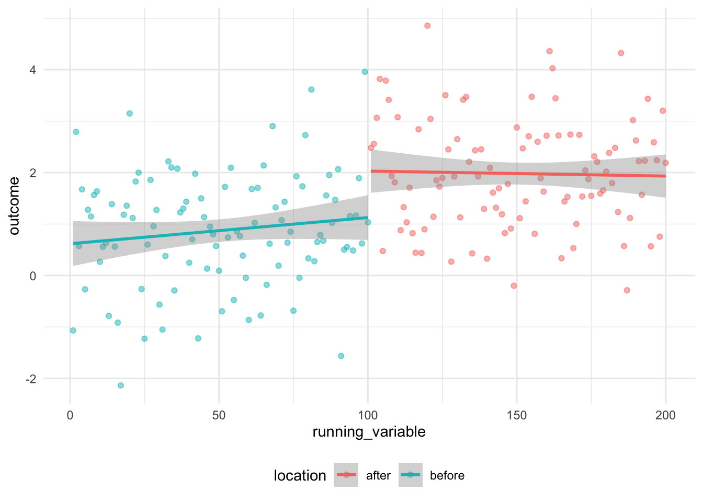
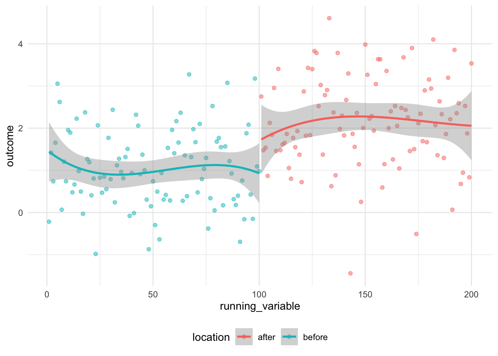
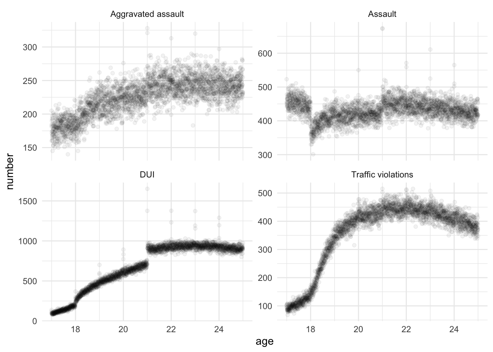

library(broom)
library(broom.mixed)
library(estimatr)
library(haven)
library(knitr)
library(MatchIt)
library(modelsummary)
library(palmerpenguins)
library(rdrobust)
library(rstanarm)
library(scales)
library(tidyverse)15 Causality from observational data
Prerequisites
- Read Causal design patterns for data analysts, (Riederer 2021)
- This blog post provides an overview of different approaches for making causal claims from observational data.
- Read BNT162b2 mRNA Covid-19 Vaccine in a Nationwide Mass Vaccination Setting, (Dagan et al. 2021)
- This paper compares causal conclusions drawn from observational data with those of a randomized trial.
- Read The Effect: An Introduction to Research Design and Causality, (Huntington-Klein 2021)
- Focus on Chapters 18 “Difference-in-Differences”, 19 “Instrumental Variables”, and 20 “Regression Discontinuity”, which provide an overview of three key approaches for making causal claims from observational data.
- Read Understanding regression discontinuity designs as observational studies, (Sekhon and Titiunik 2017)
- Discusses some concerns with the use of regression discontinuity.
Key concepts and skills
- Running an experiment is not always possible, but we can use various approaches to nonetheless be able to speak to causality to some extent.
- We need to be careful of common paradoxes including Simpson’s paradox and Berkson’s paradox, and be aware of both the potential and pitfalls of matching.
- We can use difference-in-differences when we have data on both treated and untreated units at both time periods. Regression discontinuity is useful when a group is either treated or not, but the two groups are very similar apart from the treatment. And instrumental variables is an approach used to estimate causality indirectly through another variable.
- In general, these approaches need to be used with humility and concern for weaknesses and assumptions, both those that we can test and those that we cannot.
Software and packages
- Base R (R Core Team 2023)
broom(Robinson, Hayes, and Couch 2022)broom.mixed(Bolker and Robinson 2022)estimatr(Blair et al. 2021)haven(Wickham, Miller, and Smith 2023)knitr(Xie 2023)MatchIt(Ho et al. 2011)modelsummary(Arel-Bundock 2022)palmerpenguins(Horst, Presmanes Hill, and Gorman 2020)rdrobust(Calonico et al. 2021)rstanarm(Goodrich et al. 2023)scales(Wickham and Seidel 2022)tidyverse(Wickham et al. 2019)
15.1 Introduction
Life is grand when we can conduct experiments to be able to speak to causality. But there are circumstances in which we cannot run an experiment, yet nonetheless want to be able to make causal claims. And data from outside experiments have value that experiments do not have. In this chapter we discuss the circumstances and methods that allow us to speak to causality using observational data. We use relatively simple methods, in sophisticated ways, drawing from statistics, but also a variety of social sciences, including economics and political science, as well as epidemiology.
For instance, Dagan et al. (2021) use observational data to confirm the effectiveness of the Pfizer-BioNTech vaccine. They discuss how one concern with using observational data in this way is confounding, which is where we are concerned that there is some variable that affects both the predictor and outcome variables and can lead to spurious relationships. Dagan et al. (2021) adjust for this by first making a list of potential confounders, such as age, sex, geographic location, and healthcare usage and then adjusting for each of them, by matching one-to-one between people that were vaccinated and those that were not. The experimental data guided the use of observational data, and the larger size of the latter enabled a focus on specific age-groups and extent of disease.
This chapter is about using observational data in sophisticated ways. How we can nonetheless be comfortable making causal statements, even when we cannot run A/B tests or RCTs. Indeed, in what circumstances may we prefer to not run those or to run observational-based approaches in addition to them. We cover three of the major methods: difference-in-differences, regression discontinuity, and instrumental variables.
15.2 Two common paradoxes
There are two situations where data can trick us that are so common that we will explicitly go through them. These are:
- Simpson’s paradox, and
- Berkson’s paradox.
15.2.1 Simpson’s paradox
Simpson’s paradox occurs when we estimate some relationship for subsets of our data, but a different relationship when we consider the entire dataset (Simpson 1951). It is a particular case of the ecological fallacy, which is when we try to make claims about individuals, based on their group. For instance, it may be that there is a positive relationship between undergraduate grades and performance in graduate school in two departments when considering each department individually. But if undergraduate grades tended to be higher in one department than another while graduate school performance tended to be opposite, we may find a negative relationship between undergraduate grades and performance in graduate school. We can simulate some data to show this more clearly (Figure 15.1).
set.seed(853)
number_in_each <- 1000
department_one <-
tibble(
undergrad = runif(n = number_in_each, min = 0.7, max = 0.9),
noise = rnorm(n = number_in_each, 0, sd = 0.1),
grad = undergrad + noise,
type = "Department 1"
)
department_two <-
tibble(
undergrad = runif(n = number_in_each, min = 0.6, max = 0.8),
noise = rnorm(n = number_in_each, 0, sd = 0.1),
grad = undergrad + noise + 0.3,
type = "Department 2"
)
both_departments <- rbind(department_one, department_two)
both_departments# A tibble: 2,000 × 4
undergrad noise grad type
<dbl> <dbl> <dbl> <chr>
1 0.772 -0.0566 0.715 Department 1
2 0.724 -0.0312 0.693 Department 1
3 0.797 0.0770 0.874 Department 1
4 0.763 -0.0664 0.697 Department 1
5 0.707 0.0717 0.779 Department 1
6 0.781 -0.0165 0.764 Department 1
7 0.726 -0.104 0.623 Department 1
8 0.749 0.0527 0.801 Department 1
9 0.732 -0.0471 0.684 Department 1
10 0.738 0.0552 0.793 Department 1
# ℹ 1,990 more rowsboth_departments |>
ggplot(aes(x = undergrad, y = grad)) +
geom_point(aes(color = type), alpha = 0.1) +
geom_smooth(aes(color = type), method = "lm", formula = "y ~ x") +
geom_smooth(method = "lm", formula = "y ~ x", color = "black") +
labs(
x = "Undergraduate results",
y = "Graduate results",
color = "Department"
) +
theme_minimal() +
scale_color_brewer(palette = "Set1") +
theme(legend.position = "bottom")

Simpson’s paradox is often illustrated using real-world data from University of California, Berkeley, on graduate admissions (Bickel, Hammel, and O’Connell 1975). This paper was mentioned in Chapter 4 as having one of the greatest sub-titles ever published. Hernán, Clayton, and Keiding (2011) create DAGs that further illuminate the relationship and the cause of the paradox.
More recently, as mentioned in its documentation, the “penguins” dataset from palmerpenguins provides an example of Simpson’s paradox, using real-world data on the relationship between body mass and bill depth in different species of penguins (Figure 15.2). The overall negative trend occurs because Gentoo penguins tend to be heavier but with shorter bills compared to Adelie and Chinstrap penguins.
penguins |>
ggplot(aes(x = body_mass_g, y = bill_depth_mm)) +
geom_point(aes(color = species), alpha = 0.1) +
geom_smooth(aes(color = species), method = "lm", formula = "y ~ x") +
geom_smooth(
method = "lm",
formula = "y ~ x",
color = "black"
) +
labs(
x = "Body mass (grams)",
y = "Bill depth (millimeters)",
color = "Species"
) +
theme_minimal() +
scale_color_brewer(palette = "Set1") +
theme(legend.position = "bottom")

15.2.2 Berkson’s paradox
Berkson’s paradox occurs when we estimate some relationship based on the dataset that we have, but because the dataset is so selected, the relationship is different in a more general dataset (Berkson 1946). For instance, if we have a dataset of professional cyclists then we might find there is no relationship between their VO2 max and their chance of winning a bike race (Coyle et al. 1988; Podlogar, Leo, and Spragg 2022). But if we had a dataset of the general population then we might find a relationship between these two variables. The professional dataset has just been so selected that the relationship disappears; one cannot become a professional cyclist unless one has a good enough VO2 max, but among professional cyclists everyone has a good enough VO2 max. Again, we can simulate some data to show this more clearly (Figure 15.3).
set.seed(853)
num_pros <- 100
num_public <- 1000
professionals <- tibble(
VO2 = runif(num_pros, 0.7, 0.9),
chance_of_winning = runif(num_pros, 0.7, 0.9),
type = "Professionals"
)
general_public <- tibble(
VO2 = runif(num_public, 0.6, 0.8),
chance_of_winning = VO2 + rnorm(num_public, 0, 0.03) + 0.1,
type = "Public"
)
professionals_and_public <- bind_rows(professionals, general_public)professionals_and_public |>
ggplot(aes(x = VO2, y = chance_of_winning)) +
geom_point(aes(color = type), alpha = 0.1) +
geom_smooth(aes(color = type), method = "lm", formula = "y ~ x") +
geom_smooth(method = "lm", formula = "y ~ x", color = "black") +
labs(
x = "VO2 max",
y = "Chance of winning a bike race",
color = "Type"
) +
theme_minimal() +
scale_color_brewer(palette = "Set1") +
theme(legend.position = "bottom")

15.3 Difference-in-differences
The ideal situation of being able to conduct an experiment is rarely possible. Can we reasonably expect that Netflix would allow us to change prices? And even if they did once, would they let us do it again, and again, and again? Further, rarely can we explicitly create treatment and control groups. Finally, experiments can be expensive or unethical. Instead, we need to make do with what we have. Rather than our counterfactual coming to us through randomization, and hence us knowing that the two are the same but for the treatment, we try to identify groups that were similar but for the treatment, and hence any differences can be attributed to the treatment.
With observational data, sometimes there are differences between our two groups before we treat. Provided those pre-treatment differences satisfy assumptions that essentially amount to the differences being both consistent, and that we expect that consistency to continue in the absence of the treatment—the “parallel trends” assumption—then we can look to any difference in the differences as the effect of the treatment. One of the aspects of difference-in-differences analysis is that we can do it using relatively straight forward methods, for instance Tang (2015). Linear regression with a binary variable is enough to get started and do a convincing job.
Consider wanting to know the effect of a new tennis racket on serve speed. One way to test this would be to measure the difference between, say, Roger Federer’s serve speed without the tennis racket and the serve speed of an enthusiastic amateur, let us call them Ville, with the tennis racket. Yes, we would find a difference, but would we know how much to attribute to the tennis racket? Another way would be to consider the difference between Ville’s serve speed without the new tennis racket and Ville’s serve speed with the new tennis racket. But what if serves were just getting faster naturally over time? Instead, we combine the two approaches to look at the difference in the differences.
We begin by measuring Federer’s serve speed and compare it to Ville’s serve speed, both without the new racket. We then measure Federer’s serve speed again, and measure Ville’s serve speed with the new racket. That difference in the differences would then be the estimate of the effect of the new racket. There are a few key questions we must ask to see if this analysis is appropriate:
- Is there something else that may have affected only Ville, and not Federer that could affect Ville’s serve speed?
- Is it likely that Federer and Ville have the same trajectory of serve speed improvement? This is the “parallel trends” assumption, and it dominates many discussions of difference-in-differences analysis.
- Finally, is it likely that the variance of our serve speeds of Federer and Ville are the same?
Despite these requirements, difference-in-differences is a powerful approach because we do not need the treatment and control group to be the same before the treatment. We just need to have a good idea of how they differed.
15.3.1 Simulated example: tennis serve speed
To be more specific about the situation, we simulate data. We will simulate a situation in which there is initially a difference of one between the serve speeds of the different people, and then after a new tennis racket, there is a difference of six. We can use a graph to illustrate the situation (Figure 15.4).
set.seed(853)
simulated_diff_in_diff <-
tibble(
person = rep(c(1:1000), times = 2),
time = c(rep(0, times = 1000), rep(1, times = 1000)),
treat_group = rep(sample(x = 0:1, size = 1000, replace = TRUE ), times = 2)
) |>
mutate(
treat_group = as.factor(treat_group),
time = as.factor(time)
)
simulated_diff_in_diff <-
simulated_diff_in_diff |>
rowwise() |>
mutate(
serve_speed = case_when(
time == 0 & treat_group == 0 ~ rnorm(n = 1, mean = 5, sd = 1),
time == 1 & treat_group == 0 ~ rnorm(n = 1, mean = 6, sd = 1),
time == 0 & treat_group == 1 ~ rnorm(n = 1, mean = 8, sd = 1),
time == 1 & treat_group == 1 ~ rnorm(n = 1, mean = 14, sd = 1)
)
)
simulated_diff_in_diff# A tibble: 2,000 × 4
# Rowwise:
person time treat_group serve_speed
<int> <fct> <fct> <dbl>
1 1 0 0 4.43
2 2 0 1 6.96
3 3 0 1 7.77
4 4 0 0 5.31
5 5 0 0 4.09
6 6 0 0 4.85
7 7 0 0 6.43
8 8 0 0 5.77
9 9 0 1 6.13
10 10 0 1 7.32
# ℹ 1,990 more rowssimulated_diff_in_diff |>
ggplot(aes(x = time, y = serve_speed, color = treat_group)) +
geom_point(alpha = 0.2) +
geom_line(aes(group = person), alpha = 0.1) +
theme_minimal() +
labs(x = "Time period", y = "Serve speed", color = "Person got a new racket") +
scale_color_brewer(palette = "Set1") +
theme(legend.position = "bottom")
We can obtain our estimate manually, by looking at the average difference of the differences. When we do that, we find that we estimate the effect of the new tennis racket to be 5.06, which is similar to what we simulated.
ave_diff <-
simulated_diff_in_diff |>
pivot_wider(
names_from = time,
values_from = serve_speed,
names_prefix = "time_"
) |>
mutate(difference = time_1 - time_0) |>
# Average difference between old and new racket serve speed within groups
summarise(average_difference = mean(difference),
.by = treat_group)
# Difference between the average differences of each group
ave_diff$average_difference[2] - ave_diff$average_difference[1][1] 5.058414And we can use linear regression to get the same result. The model we are interested in is:
\[Y_{i,t} = \beta_0 + \beta_1\times\mbox{Treatment}_i + \beta_2\times\mbox{Time}_t + \beta_3\times(\mbox{Treatment} \times\mbox{Time})_{i,t} + \epsilon_{i,t}\]
While we should include the separate aspects as well, it is the estimate of the interaction that we are interested in. In this case it is \(\beta_3\). And we find that our estimated effect is 5.06 (Table 15.1).
diff_in_diff_example_regression <-
stan_glm(
formula = serve_speed ~ treat_group * time,
data = simulated_diff_in_diff,
family = gaussian(),
prior = normal(location = 0, scale = 2.5, autoscale = TRUE),
prior_intercept = normal(0, 2.5, autoscale = TRUE),
prior_aux = exponential(rate = 1, autoscale = TRUE),
seed = 853
)
saveRDS(
diff_in_diff_example_regression,
file = "diff_in_diff_example_regression.rds"
)diff_in_diff_example_regression <-
readRDS(file = "diff_in_diff_example_regression.rds")modelsummary(
diff_in_diff_example_regression
)| (1) | |
|---|---|
| (Intercept) | 4.971 |
| treatment_group1 | 3.035 |
| time1 | 1.006 |
| treatment_group1 × time1 | 5.057 |
| Num.Obs. | 2000 |
| R2 | 0.927 |
| R2 Adj. | 0.927 |
| Log.Lik. | -2802.166 |
| ELPD | -2806.3 |
| ELPD s.e. | 32.1 |
| LOOIC | 5612.5 |
| LOOIC s.e. | 64.2 |
| WAIC | 5612.5 |
| RMSE | 0.98 |
15.3.2 Assumptions
If we want to use difference-in-differences, then we need to satisfy the assumptions. There were three that were touched on earlier, but here we will focus on the “parallel trends” assumption. The parallel trends assumption haunts everything to do with difference-in-differences analysis because we can never prove it; we can just be convinced of it, and try to convince others.
To see why we can never prove it, consider an example in which we want to know the effect of a new stadium on a professional sports team’s wins/loses. To do this we consider two professional basketball teams: the Golden State Warriors and the Toronto Raptors. The Warriors changed stadiums at the start of the 2019-20 season, while the Raptors did not, so we will consider four time periods: the 2016-17 season, 2017-18 season, 2018-19 season, and finally we will compare the performance with the one after they moved, so the 2019-20 season. The Raptors here act as our counterfactual. This means that we assume the relationship between the Warriors and the Raptors, in the absence of a new stadium, would have continued to change in a consistent way. But the fundamental problem of causal inference means that we can never know that for certain. We must present sufficient evidence to assuage any concerns that a reader may have.
There are four main threats to validity when we use difference-in-differences, and we need to address all of them (Cunningham 2021, 272–77):
- Non-parallel trends. The treatment and control groups may be based on differences. As such it can be difficult to convincingly argue for parallel trends. In this case, maybe try to find another factor to consider in your model that may adjust for some of that. This may require triple-differenced approaches. For instance, in the earlier example, we could perhaps add the San Francisco 49ers, a football team, as they are in the same broad geographic area as the Warriors. Or maybe rethink the analysis to see if we can make a different control group. Adding additional earlier time periods may help but may introduce more issues, which we touch on in the third point.
- Compositional differences. This is a concern when working with repeated cross-sections. What if the composition of those cross-sections change? For instance, if we are working at an app that is rapidly growing, and we want to look at the effect of some change. In our initial cross-section, we may have mostly young people, but in a subsequent cross-section, we may have more older people as the demographics of the app usage change. Hence our results may just be an age-effect, not an effect of the change that we are interested in.
- Long-term effects compared with reliability. As we discussed in Chapter 8, there is a trade-off between the length of the analysis that we run. As we run the analysis for longer there is more opportunity for other factors to affect the results. There is also increased chance for someone who was not treated to be treated. But, on the other hand, it can be difficult to convincingly argue that short-term results will continue in the long term.
- Functional form dependence. This is less of an issue when the outcomes are similar, but if they are different then functional form may be responsible for some aspects of the results.
15.3.3 French newspaper prices between 1960 and 1974
In this case study we introduce Angelucci and Cagé (2019). They are interested in understanding the effect of the introduction of television on French newspapers. We will replicate one of the main findings.
The business model of newspapers has been challenged by the internet and many local newspapers have closed. This issue is not new. When television was introduced, there were similar concerns. Angelucci and Cagé (2019) use the introduction of television advertising in France, announced in 1967, to examine the effect of decreased advertising revenue on newspapers. They create a dataset of French newspapers from 1960 to 1974 and then use difference-in-differences to examine the effect of the reduction in advertising revenues on newspapers’ content and prices. The change that they focus on is the introduction of television advertising, which they argue affected national newspapers more than local newspapers. They find that this change results in both less journalism content in the newspapers and lower newspaper prices. Focusing on this change, and analyzing it using difference-in-differences, is important because it allows us to disentangle a few competing effects. For instance, did newspapers become redundant because they could no longer charge high prices for their advertisements, or because consumers preferred to get their news from the television?
We can get free access to the data that underpins Angelucci and Cagé (2019) after registration. The dataset is in the Stata data format, “.dta”, which we can read with read_dta() from haven. The file that we are interested in is “Angelucci_Cage_AEJMicro_dataset.dta”, which is the “dta” folder.
newspapers <- read_dta("Angelucci_Cage_AEJMicro_dataset.dta")There are 1,196 observations in the dataset and 52 variables. Angelucci and Cagé (2019) are interested in the 1960-1974 time period which has around 100 newspapers. There are 14 national newspapers at the beginning of the period and 12 at the end. The key period is 1967, when the French government announced it would allow advertising on television. Angelucci and Cagé (2019) argue that national newspapers were affected by this change, but local newspapers were not. The national newspapers are the treatment group and the local newspapers are the control group.
We focus just on the headline difference-in-differences result and construct summary statistics.
newspapers <-
newspapers |>
select(
year, id_news, after_national, local, national, ra_cst, ps_cst, qtotal
) |>
mutate(ra_cst_div_qtotal = ra_cst / qtotal,
across(c(id_news, after_national, local, national), as.factor),
year = as.integer(year))
newspapers# A tibble: 1,196 × 9
year id_news after_national local national ra_cst ps_cst qtotal
<int> <fct> <fct> <fct> <fct> <dbl> <dbl> <dbl>
1 1960 1 0 1 0 52890272 2.29 94478.
2 1961 1 0 1 0 56601060 2.20 96289.
3 1962 1 0 1 0 64840752 2.13 97313.
4 1963 1 0 1 0 70582944 2.43 101068.
5 1964 1 0 1 0 74977888 2.35 102103.
6 1965 1 0 1 0 74438248 2.29 105169.
7 1966 1 0 1 0 81383000 2.31 126235.
8 1967 1 0 1 0 80263152 2.88 128667.
9 1968 1 0 1 0 87165704 3.45 131824.
10 1969 1 0 1 0 102596384 3.28 132417.
# ℹ 1,186 more rows
# ℹ 1 more variable: ra_cst_div_qtotal <dbl>We are interested in what happened from 1967 onward, especially in terms of advertising revenue, and whether that was different for national, compared with local newspapers (Figure 15.5). We use scales to adjust the y-axis.
newspapers |>
mutate(type = if_else(local == 1, "Local", "National")) |>
ggplot(aes(x = year, y = ra_cst)) +
geom_point(alpha = 0.5) +
scale_y_continuous(
labels = dollar_format(
prefix = "$",
suffix = "M",
scale = 0.000001)) +
labs(x = "Year", y = "Advertising revenue") +
facet_wrap(vars(type), nrow = 2) +
theme_minimal() +
geom_vline(xintercept = 1966.5, linetype = "dashed")

The model that we are interested in estimating is:
\[\mbox{ln}(y_{n,t}) = \beta_0 + \beta_1\times(\mbox{National binary}\times\mbox{1967 onward binary}) + \lambda_n + \gamma_t + \epsilon\]
It is the \(\beta_1\) coefficient that we are especially interested in. We estimate the models using stan_glm().
ad_revenue <-
stan_glm(
formula = log(ra_cst) ~ after_national + id_news + year,
data = newspapers,
family = gaussian(),
prior = normal(location = 0, scale = 2.5, autoscale = TRUE),
prior_intercept = normal(0, 2.5, autoscale = TRUE),
prior_aux = exponential(rate = 1, autoscale = TRUE),
seed = 853
)
saveRDS(
ad_revenue,
file = "ad_revenue.rds"
)
ad_revenue_div_circulation <-
stan_glm(
formula = log(ra_cst_div_qtotal) ~ after_national + id_news + year,
data = newspapers,
family = gaussian(),
prior = normal(location = 0, scale = 2.5, autoscale = TRUE),
prior_intercept = normal(0, 2.5, autoscale = TRUE),
prior_aux = exponential(rate = 1, autoscale = TRUE),
seed = 853
)
saveRDS(
ad_revenue_div_circulation,
file = "ad_revenue_div_circulation.rds"
)
# Consumer side
subscription_price <-
stan_glm(
formula = log(ps_cst) ~ after_national + id_news + year,
data = newspapers,
family = gaussian(),
prior = normal(location = 0, scale = 2.5, autoscale = TRUE),
prior_intercept = normal(0, 2.5, autoscale = TRUE),
prior_aux = exponential(rate = 1, autoscale = TRUE),
seed = 853
)
saveRDS(
subscription_price,
file = "subscription_price.rds"
)ad_revenue <-
readRDS(file = "ad_revenue.rds")
ad_revenue_div_circulation <-
readRDS(file = "ad_revenue_div_circulation")
subscription_price <-
readRDS(file = "subscription_price.rds")Looking at the advertising-side variables, such as revenue and prices, in Table 15.2 we find consistently negative coefficients.
selected_variables <- c("year" = "Year", "after_national1" = "After change")
modelsummary(
models = list(
"Ad revenue" = ad_revenue,
"Ad revenue over circulation" = ad_revenue_div_circulation,
"Subscription price" = subscription_price
),
fmt = 2,
coef_map = selected_variables
)| Ad revenue | Ad revenue over circulation | Subscription price | |
|---|---|---|---|
| Year | 0.05 | 0.04 | 0.05 |
| After change | -0.23 | -0.15 | -0.04 |
| Num.Obs. | 1052 | 1048 | 1044 |
| R2 | 0.984 | 0.896 | 0.868 |
| R2 Adj. | 0.983 | 0.886 | 0.852 |
| Log.Lik. | 336.539 | 441.471 | 875.559 |
| ELPD | 257.4 | 362.3 | 793.5 |
| ELPD s.e. | 34.4 | 45.6 | 24.3 |
| LOOIC | -514.8 | -724.6 | -1586.9 |
| LOOIC s.e. | 68.9 | 91.2 | 48.6 |
| WAIC | -515.9 | -725.5 | -1588.9 |
| RMSE | 0.17 | 0.16 | 0.10 |
We can replicate the main results of Angelucci and Cagé (2019) and find that in many cases there appears to be a difference from 1967 onward. Angelucci and Cagé (2019, 353–58) also include an excellent example of the discussion of interpretation, external validity, and robustness that is required for difference-in-differences models.
15.4 Propensity score matching
Difference-in-differences is a powerful analysis framework. But it can be tough to identify appropriate treatment and control groups. Alexander and Ward (2018) compare migrant brothers, where one brother had most of their education in a different country, and the other brother had most of their education in the United States. Given the data that are available, this match provides a reasonable treatment and control group. But other matches could have given different results, for instance friends or cousins.
We can only match based on observable variables. For instance, age-group or education. At two different times we compare smoking rates in 18-year-olds in one city with smoking rates in 18-year-olds in another city. This would be a coarse match because we know that there are many differences between 18-year-olds, even in terms of the variables that we commonly observe, say gender and education. One way to deal with this would be to create sub-groups: 18-year-old males with a high school education, etc. But then the sample sizes quickly become small. We also have the issue of how to deal with continuous variables. And is an 18-year-old really that different to a 19-year-old? Why not also compare with them?
One way to proceed is to consider a nearest neighbor approach, but there can be limited concern for uncertainty with this approach. There can also be an issue with having many variables because we end up with a high-dimension graph. This leads to propensity score matching. Here we explain the process of propensity score matching and a few of the concerns that are commonly brought up about it.
Propensity score matching involves assigning some probability—the “propensity score”—to each observation. We construct that probability based on the observation’s values for the predictors without the treatment. That probability is our best guess at the probability of the observation being treated, regardless of whether it was actually treated. For instance, if 18-year-old males were treated but 19-year-old males were not, then, as there is not much difference between 18-year-old and 19-year-old males in general, our assigned probability would be similar. We then compare the outcomes of observations with similar propensity scores.
15.4.1 Simulated example: free shipping
One advantage of propensity score matching is that it allows us to easily consider many predictor variables at once, and it can be constructed using logistic regression. To be more specific we can simulate some data. We will pretend that we work for a large online retailer. We are going to treat some individuals with free shipping to see what happens to their average purchase.
set.seed(853)
sample_size <- 10000
purchase_data <-
tibble(
unique_person_id = 1:sample_size,
age = sample(x = 18:100, size = sample_size, replace = TRUE),
gender = sample(
x = c("Female", "Male", "Other/decline"),
size = sample_size,
replace = TRUE,
prob = c(0.49, 0.47, 0.02)
),
income = rnorm(n = sample_size, mean = 60000, sd = 15000) |> round(0)
)
purchase_data# A tibble: 10,000 × 4
unique_person_id age gender income
<int> <int> <chr> <dbl>
1 1 26 Male 68637
2 2 81 Female 71486
3 3 34 Male 75652
4 4 46 Male 68068
5 5 100 Female 73206
6 6 20 Male 41872
7 7 50 Female 75957
8 8 36 Female 56566
9 9 72 Male 54621
10 10 52 Female 40722
# ℹ 9,990 more rowsThen we need to add some probability of being treated with free shipping. We will say that it depends on our predictors and that younger, higher-income, male individuals make this treatment more likely. We only know that because we simulated the situation. We would not know it if we were using actual data.
purchase_data <-
purchase_data |>
mutate(
# change characteristics to bounded numbers
age_num = rank(1 / age, ties.method = "random") %/% 3000,
# force it between 0 and 3
gender_num = case_when(
gender == "Male" ~ 3,
gender == "Female" ~ 2,
gender == "Other/decline" ~ 1
),
income_num = rank(income, ties.method = "random") %/% 3000
) |>
mutate(
sum_num = age_num + gender_num + income_num,
softmax_prob = exp(sum_num) / exp(max(sum_num) + 0.5),
free_shipping = rbinom(n = sample_size, size = 1, prob = softmax_prob)) |>
select(-(age_num:softmax_prob))Finally, we need to have some measure of a person’s average spend. We will assume that this increases with income. We want those with free shipping to be slightly higher than those without.
purchase_data <-
purchase_data |>
mutate(
noise = rnorm(n = nrow(purchase_data), mean = 5, sd = 2),
spend = income / 1000 + noise,
spend = if_else(free_shipping == 1, spend + 10, spend),
spend = as.integer(spend)
) |>
select(-noise) |>
mutate(across(c(gender, free_shipping), as.factor))
purchase_data# A tibble: 10,000 × 6
unique_person_id age gender income free_shipping spend
<int> <int> <fct> <dbl> <fct> <int>
1 1 26 Male 68637 0 72
2 2 81 Female 71486 0 73
3 3 34 Male 75652 0 80
4 4 46 Male 68068 0 75
5 5 100 Female 73206 0 78
6 6 20 Male 41872 0 45
7 7 50 Female 75957 0 78
8 8 36 Female 56566 0 62
9 9 72 Male 54621 0 55
10 10 52 Female 40722 0 47
# ℹ 9,990 more rowsNaively we can see that there is a difference in the average spend between those with free shipping and those without (Table 15.3). But the fundamental concern is what would have the spend have been of those with free shipping if they have not had free shipping. Table 15.3 shows an average comparison but not everyone had the same chance of getting free shipping. So we question the validity of that use of an average comparison. Instead we use propensity score matching to “link” each observation that actually got free shipping with their most similar observation, based on the observable variables, that did not get free shipping.
purchase_data |>
summarise(average_spend = round(mean(spend), 2), .by = free_shipping) |>
mutate(free_shipping = if_else(free_shipping == 0, "No", "Yes")) |>
kable(
col.names = c("Received free shipping?", "Average spend"),
booktabs = TRUE, linesep = ""
)| Received free shipping? | Average spend |
|---|---|
| No | 64.44 |
| Yes | 86.71 |
We use matchit() from MatchIt to implement logistic regression and create matched groups. We then use match.data() to get the data of matches containing both all 254 people who were actually treated with free shipping and the untreated person who is considered as similar to them, based on propensity score, as possible. The result is a dataset of 508 observations.
matched_groups <-
matchit(
free_shipping ~ age + gender + income,
data = purchase_data,
method = "nearest",
distance = "glm"
)
matched_groupsA matchit object
- method: 1:1 nearest neighbor matching without replacement
- distance: Propensity score
- estimated with logistic regression
- number of obs.: 10000 (original), 508 (matched)
- target estimand: ATT
- covariates: age, gender, incomematched_dataset <- match.data(matched_groups)
matched_dataset# A tibble: 508 × 9
unique_person_id age gender income free_shipping spend distance weights
<int> <int> <fct> <dbl> <fct> <int> <dbl> <dbl>
1 23 28 Female 65685 1 79 0.0334 1
2 24 67 Male 71150 0 76 0.0220 1
3 32 22 Female 86071 0 92 0.131 1
4 48 66 Female 100105 0 108 0.0473 1
5 59 25 Male 55548 1 68 0.0541 1
6 82 66 Male 70721 0 75 0.0224 1
7 83 58 Male 83443 0 88 0.0651 1
8 87 46 Male 59073 1 73 0.0271 1
9 119 89 Other/dec… 72284 0 74 0.00301 1
10 125 51 Female 81164 1 96 0.0303 1
# ℹ 498 more rows
# ℹ 1 more variable: subclass <fct>Finally, we can estimate the effect of being treated on average spend using linear regression (Table 15.4). We are particularly interested in the coefficient associated with the treatment variable, in this case free shipping.
propensity_score_regression <- lm(
spend ~ age + gender + income + free_shipping,
data = matched_dataset
)
modelsummary(propensity_score_regression)| (1) | |
|---|---|
| (Intercept) | 3.862 |
| (0.506) | |
| age | 0.007 |
| (0.005) | |
| genderMale | 0.013 |
| (0.202) | |
| genderOther/decline | -0.509 |
| (0.847) | |
| income | 0.001 |
| (0.000) | |
| free_shipping1 | 10.073 |
| (0.180) | |
| Num.Obs. | 508 |
| R2 | 0.983 |
| R2 Adj. | 0.983 |
| AIC | 2167.6 |
| BIC | 2197.2 |
| Log.Lik. | -1076.811 |
| F | 5911.747 |
| RMSE | 2.02 |
In Table 15.4, which was based on only the matched sample, we find that the effect is what we simulated. That is, there is a difference of ten between the average spend of those who received free shipping and those that did not. That is in contrast to Table 15.3 which was based on the entire sample.
We cover propensity score matching because it is widely used. But there are tradeoffs. Transparency is needed when it is being used (Greifer 2021). These concerns include (King and Nielsen 2019):
- Unobservables. Propensity score matching cannot match on unobserved variables. This may be fine in a classroom setting, but in more realistic settings it will likely cause issues. It is difficult to understand why individuals that appear to be so similar, would have received different treatments, unless there is something unobserved that causes the difference. As propensity score matching cannot account for these, it is difficult to know which features are actually being brought together.
- Modeling. The results of propensity score matching tend to be specific to the model that is used. As there is considerable flexibility as to which model is used, this enables researchers to pick through matches to find one that suits. Additionally, because the two regression steps (the matching and the analysis) are conducted separately, there is no propagation of uncertainty.
The fundamental problem of unobservables can never be shown to be inconsequential because that would require the unobserved data. Those who want to use propensity score matching, and other matching methods, need to be able to argue convincingly that it is appropriate. McKenzie (2021) presents a few cases where this is possible, for instance, when there are capacity limits. As is the common theme of this book, such cases will require focusing on the data and a deep understanding of the situation that produced it.
15.5 Regression discontinuity design
Regression discontinuity design (RDD) was established by Thistlethwaite and Campbell (1960) and is a popular way to get causality when there is a continuous variable with cut-offs that determine treatment. Is there a difference between a student who gets 79 per cent and a student who gets 80 per cent? Probably not much, but one may get a A-, while the other may get a B+. Seeing that on a transcript could affect who gets a job which could affect income. In this case the percentage is a “forcing variable” or “forcing function” and the cut-off for an A- is a “threshold”. As the treatment is determined by the forcing variable we need to control for that variable. These seemingly arbitrary cut-offs can be seen all the time. Hence, there has been a great deal of work using RDD.
There is sometimes slightly different terminology used when it comes to RDD. For instance, Cunningham (2021) refers to the forcing function as a running variable. The exact terminology that is used does not matter provided we use it consistently.
15.5.1 Simulated example: income and grades
To be more specific about the situation, we simulate data. We will consider the relationship between income and grades, and simulate there to be a change if a student gets at least 80 (Figure 15.6).
set.seed(853)
num_observations <- 1000
rdd_example_data <- tibble(
person = c(1:num_observations),
mark = runif(num_observations, min = 78, max = 82),
income = rnorm(num_observations, 10, 1)
)
## Make income more likely to be higher if mark at least 80
rdd_example_data <-
rdd_example_data |>
mutate(
noise = rnorm(n = num_observations, mean = 2, sd = 1),
income = if_else(mark >= 80, income + noise, income)
)
rdd_example_data# A tibble: 1,000 × 4
person mark income noise
<int> <dbl> <dbl> <dbl>
1 1 79.4 9.43 1.87
2 2 78.5 9.69 2.26
3 3 79.9 10.8 1.14
4 4 79.3 9.34 2.50
5 5 78.1 10.7 2.21
6 6 79.6 9.83 2.47
7 7 78.5 8.96 4.22
8 8 79.0 10.5 3.11
9 9 78.6 9.53 0.671
10 10 78.8 10.6 2.46
# ℹ 990 more rowsrdd_example_data |>
ggplot(aes(
x = mark,
y = income
)) +
geom_point(alpha = 0.2) +
geom_smooth(
data = rdd_example_data |> filter(mark < 80),
method = "lm",
color = "black",
formula = "y ~ x"
) +
geom_smooth(
data = rdd_example_data |> filter(mark >= 80),
method = "lm",
color = "black",
formula = "y ~ x"
) +
theme_minimal() +
labs(
x = "Mark",
y = "Income ($)"
)

We can use a binary variable with linear regression to estimate the effect of getting a mark over 80 on income. We expect the coefficient to be around two, which is what we simulated, and what we find (Table 15.5).
rdd_example_data <-
rdd_example_data |>
mutate(mark_80_and_over = if_else(mark < 80, 0, 1))
rdd_example <-
stan_glm(
formula = income ~ mark + mark_80_and_over,
data = rdd_example_data,
family = gaussian(),
prior = normal(location = 0, scale = 2.5, autoscale = TRUE),
prior_intercept = normal(0, 2.5, autoscale = TRUE),
prior_aux = exponential(rate = 1, autoscale = TRUE),
seed = 853
)
saveRDS(
rdd_example,
file = "rdd_example.rds"
)rdd_example <-
readRDS(file = "rdd_example.rds")modelsummary(
models = rdd_example,
fmt = 2
)| (1) | |
|---|---|
| (Intercept) | 5.22 |
| mark | 0.06 |
| mark_80_and_over | 1.89 |
| Num.Obs. | 1000 |
| R2 | 0.417 |
| R2 Adj. | 0.415 |
| Log.Lik. | -1591.847 |
| ELPD | -1595.1 |
| ELPD s.e. | 25.4 |
| LOOIC | 3190.3 |
| LOOIC s.e. | 50.9 |
| WAIC | 3190.3 |
| RMSE | 1.19 |
There are various caveats to this estimate that we will discuss, but the essentials of RDD are here. Given an appropriate set-up, and model, RDD can compare favorably to randomized trials (Bloom, Bell, and Reiman 2020).
We could also implement RDD using rdrobust. The advantage of this approach is that many common extensions are easily available.
rdrobust(
y = rdd_example_data$income,
x = rdd_example_data$mark,
c = 80,
h = 2,
all = TRUE
) |>
summary()Sharp RD estimates using local polynomial regression.
Number of Obs. 1000
BW type Manual
Kernel Triangular
VCE method NN
Number of Obs. 497 503
Eff. Number of Obs. 497 503
Order est. (p) 1 1
Order bias (q) 2 2
BW est. (h) 2.000 2.000
BW bias (b) 2.000 2.000
rho (h/b) 1.000 1.000
Unique Obs. 497 503
=============================================================================
Method Coef. Std. Err. z P>|z| [ 95% C.I. ]
=============================================================================
Conventional 1.913 0.161 11.876 0.000 [1.597 , 2.229]
Bias-Corrected 1.966 0.161 12.207 0.000 [1.650 , 2.282]
Robust 1.966 0.232 8.461 0.000 [1.511 , 2.422]
=============================================================================15.5.2 Assumptions
The key assumptions of RDD are (Cunningham 2021, 163):
- The cut-off is specific, fixed, and known to all.
- The forcing function is continuous.
The first assumption is largely about being unable to manipulate the cut-off, and ensures that the cut-off has meaning. The second assumption enables us to be confident that people on either side of the threshold are similar, apart from just happening to just fall on either side of the threshold.
When we discussed randomized control trials and A/B testing in Chapter 8 the randomized assignment of the treatment meant that the control and treatment groups were the same, but for the treatment. Then we moved to difference-in-differences, and we assumed that there was a common trend between the treated and control groups. We allowed that the groups could be different, but that we could “difference out” their differences. Finally, we considered matching, and we said that even if the control and treatment groups seemed different, we were able to match, to some extent, those who were treated with a group that were like them in all ways, apart from the fact that they were not treated.
In regression discontinuity we consider a slightly different setting. The two groups are completely different in terms of the forcing variable. They are on either side of the threshold. There is no overlap at all. But we know the threshold and believe that those on either side are essentially matched. Let us consider the 2019 NBA Eastern Conference Semifinals—Toronto and Philadelphia:
- Game 1: Raptors win 108-95;
- Game 2: 76ers win 94-89;
- Game 3: 76ers win 116-95;
- Game 4: Raptors win 101-96;
- Game 5: Raptors win 125-89;
- Game 6: 76ers win 112-101; and finally,
- Game 7: Raptors win 92-90, because of a ball that went in after bouncing on the rim four times.
Was there really that much difference between the teams?
The continuity assumption is important, but we cannot test this as it is based on a counterfactual. Instead, we need to convince people of it. Ways to do this include:
- Using a test/train set-up.
- Trying different specifications. We are especially concerned if results do not broadly persist with just linear or quadratic functions.
- Considering different subsets of the data.
- Considering different windows, which is the term we give to how far each side of the cutoff we examine.
- Being clear about uncertainty intervals, especially in graphs.
- Discuss and assuaging concerns about the possibility of omitted variables.
The threshold is also important. For instance, is there an actual shift or is there a non-linear relationship?
There are a variety of weaknesses of RDD, including:
- External validity may be difficult. For instance, when we think about the A-/B+ example, it is hard to see those generalizing to also B-/C+ students.
- The important responses are those that are close to the cut-off. This means that even if we have many A and B students, they do not help much. Hence, we need a lot of data or we may have concerns about our ability to support our claims (Green et al. 2009).
- As the researcher, we have a lot of freedom to implement different options. This means that open science best practice becomes vital.
To this point we have considered “sharp” RDD. That is, the threshold is strict. But, in reality, often the boundary is a little less strict. In a sharp RDD setting, if we know the value of the forcing function then we know the outcome. For instance, if a student gets a mark of 80 then we know that they got an A-, but if they got a mark of 79 then we know that they got a B+. But with fuzzy RDD it is only known with some probability.
We want as “sharp” an effect as possible, but if the thresholds are known, then they will be gamed. For instance, there is a lot of evidence that people run for certain marathon times, and we know that people aim for certain grades. Similarly, from the other side, it is a lot easier for an instructor to just give out As than it is to have to justify Bs. One way to look at this is to consider how “balanced” the sample is on either side of the threshold. We can do this using histograms with appropriate bins. For instance, think of the age-heaping that we found in the cleaned Kenyan census data in Chapter 9.
Another key factor for RDD is the possible effect of the decision around the choice of model. For instance, Figure 15.7 illustrates the difference between linear (Figure 15.7 (a)) and polynomial (Figure 15.7 (b)).
some_data <-
tibble(
outcome = rnorm(n = 100, mean = 1, sd = 1),
running_variable = c(1:100),
location = "before"
)
some_more_data <-
tibble(
outcome = rnorm(n = 100, mean = 2, sd = 1),
running_variable = c(101:200),
location = "after"
)
both <-
rbind(some_data, some_more_data)
both |>
ggplot(aes(x = running_variable, y = outcome, color = location)) +
geom_point(alpha = 0.5) +
geom_smooth(formula = y ~ x, method = "lm") +
theme_minimal() +
theme(legend.position = "bottom")
both |>
ggplot(aes(x = running_variable, y = outcome, color = location)) +
geom_point(alpha = 0.5) +
geom_smooth(formula = y ~ poly(x, 3), method = "lm") +
theme_minimal() +
theme(legend.position = "bottom")


The result is that our estimate of the difference in outcome is dependent on the choice of model. We see this issue occur often in RDD (Gelman 2019) and it is especially recommended that higher order polynomials not be used, and instead the choice of models be either linear, quadratic, or some other smooth function (Gelman and Imbens 2019).
RDD is a popular approach, but meta-analysis suggests that standard errors are often inappropriately small and this could result in spurious results (Stommes, Aronow, and Sävje 2023). If you use RDD it is critical that you discuss the possibility of much wider standard errors than are reported by software packages, and what effect this would have on your conclusions.
15.5.3 Alcohol and crime in California
There are many opportunities to use regression discontinuity design. For instance, we often see it used in elections where one candidate barely wins. Caughey and Sekhon (2011) examine US House elections between 1942 and 2008 and showed that there is considerable difference between bare winners and bare losers. They highlight that one of the advantages of regression discontinuity is the fact that the assumptions can be tested. Another common use is when there is a somewhat arbitrary cut-off. For instance, in much of the USA the legal drinking age is 21. Carpenter and Dobkin (2015) consider the possible effect of alcohol on crime by comparing arrests and other records of those who are either side of 21 in California. They find those who are slightly over 21 are slightly more likely to be arrested than those slightly under 21. We will revisit Carpenter and Dobkin (2015) in the context of crime in California.
We can obtain their replication data (Carpenter and Dobkin 2014) from here. Carpenter and Dobkin (2015) consider a large number of variables and construct a rate, and average this rate over a fortnight, but for simplicity, we will just consider numbers for a few variables: assault, aggravated assault, DUI, and traffic violations (Figure 15.8).
carpenter_dobkin <-
read_dta(
"P01 Age Profile of Arrest Rates 1979-2006.dta"
)carpenter_dobkin_prepared <-
carpenter_dobkin |>
mutate(age = 21 + days_to_21 / 365) |>
select(age, assault, aggravated_assault, dui, traffic_violations) |>
pivot_longer(
cols = c(assault, aggravated_assault, dui, traffic_violations),
names_to = "arrested_for",
values_to = "number"
)
carpenter_dobkin_prepared |>
mutate(
arrested_for =
case_when(
arrested_for == "assault" ~ "Assault",
arrested_for == "aggravated_assault" ~ "Aggravated assault",
arrested_for == "dui" ~ "DUI",
arrested_for == "traffic_violations" ~ "Traffic violations"
)
) |>
ggplot(aes(x = age, y = number)) +
geom_point(alpha = 0.05) +
facet_wrap(facets = vars(arrested_for), scales = "free_y") +
theme_minimal()

carpenter_dobkin_aggravated_assault_only <-
carpenter_dobkin_prepared |>
filter(
arrested_for == "aggravated_assault",
abs(age - 21) < 2
) |>
mutate(is_21_or_more = if_else(age < 21, 0, 1))rdd_carpenter_dobkin <-
stan_glm(
formula = number ~ age + is_21_or_more,
data = carpenter_dobkin_aggravated_assault_only,
family = gaussian(),
prior = normal(location = 0, scale = 2.5, autoscale = TRUE),
prior_intercept = normal(0, 2.5, autoscale = TRUE),
prior_aux = exponential(rate = 1, autoscale = TRUE),
seed = 853
)
saveRDS(
rdd_example,
file = "rdd_example.rds"
)rdd_carpenter_dobkin <-
readRDS(file = "rdd_carpenter_dobkin.rds")modelsummary(
models = rdd_carpenter_dobkin,
fmt = 2
)| (1) | |
|---|---|
| (Intercept) | 145.54 |
| age | 3.87 |
| is_21_or_more | 13.24 |
| Num.Obs. | 1459 |
| R2 | 0.299 |
| R2 Adj. | 0.297 |
| Log.Lik. | -6153.757 |
| ELPD | -6157.3 |
| ELPD s.e. | 32.9 |
| LOOIC | 12314.6 |
| LOOIC s.e. | 65.7 |
| WAIC | 12314.6 |
| RMSE | 16.42 |
And the results are similar if we use rdrobust.
rdrobust(
y = carpenter_dobkin_aggravated_assault_only$number,
x = carpenter_dobkin_aggravated_assault_only$age,
c = 21,
h = 2,
all = TRUE
) |>
summary()Sharp RD estimates using local polynomial regression.
Number of Obs. 1459
BW type Manual
Kernel Triangular
VCE method NN
Number of Obs. 729 730
Eff. Number of Obs. 729 730
Order est. (p) 1 1
Order bias (q) 2 2
BW est. (h) 2.000 2.000
BW bias (b) 2.000 2.000
rho (h/b) 1.000 1.000
Unique Obs. 729 730
=============================================================================
Method Coef. Std. Err. z P>|z| [ 95% C.I. ]
=============================================================================
Conventional 14.126 1.918 7.364 0.000 [10.366 , 17.886]
Bias-Corrected 16.708 1.918 8.709 0.000 [12.948 , 20.468]
Robust 16.708 2.879 5.804 0.000 [11.066 , 22.350]
=============================================================================15.6 Instrumental variables
Instrumental variables (IV) is an approach that can be handy when we have some type of treatment and control going on, but we have a lot of correlation with other variables and we possibly do not have a variable that actually measures what we are interested in. Adjusting for observables will not be enough to create a good estimate. Instead we find some variable—the eponymous instrumental variable—that is:
- correlated with the treatment variable, but
- not correlated with the outcome.
This solves our problem because the only way the instrumental variable can have an effect is through the treatment variable, and so we can adjust our understanding of the effect of the treatment variable appropriately. The trade-off is that instrumental variables must satisfy a bunch of different assumptions, and that, frankly, they are difficult to identify ex ante. Nonetheless, when we are able to use them, they are a powerful tool for speaking about causality.
The canonical instrumental variables example is smoking. These days we know that smoking causes cancer. But because smoking is correlated with a lot of other variables, for instance, education, it could be that it was actually education that causes cancer. RCTs may be possible, but they are likely to be troublesome in terms of speed and ethics, and so instead we look for some other variable that is correlated with smoking, but not, in and of itself, with lung cancer. In this case, we look to tax rates, and other policy responses, on cigarettes. As the tax rates on cigarettes are correlated with the number of cigarettes that are smoked, but not correlated with lung cancer, other than through their impact on cigarette smoking, through them we can assess the effect of cigarettes smoked on lung cancer.
To implement instrumental variables we first regress tax rates on cigarette smoking to get some coefficient on the instrumental variable, and then (in a separate regression) regress tax rates on lung cancer to again, get some coefficient on the instrumental variable. Our estimate is then the ratio of these coefficients, which is described as a “Wald estimate” (Gelman and Hill 2007, 219).
Sometimes instrumental variables are used in the context of random allocation of treatment, such as the Oregon Health Insurance Experiment introduced in Chapter 8. Recall the issue was that a lottery was used to select individuals who were allocated to apply for health insurance, but there was nothing forcing them to do this. Our approach would then be to consider the relationship between being selected and taking up health insurance, and then between various health outcomes and taking up insurance. Our instrumental variable estimate, which would be the ratio, would estimate only those that took up health insurance because they were selected.
Following the language of Gelman and Hill (2007, 216), when we use instrumental variables we make a variety of assumptions including:
- Ignorability of the instrument.
- Correlation between the instrumental variable and the treatment variable.
- Monotonicity.
- Exclusion restriction.
As an aside, the history of instrumental variables is intriguing, and Stock and Trebbi (2003), via Cunningham (2021), provide a brief overview. The method was first published in Wright (1928). This is a book about the effect of tariffs on animal and vegetable oil. Why might instrumental variables be important in a book about tariffs on animal and vegetable oil? The fundamental problem is that the effect of tariffs depends on both supply and demand. But we only know prices and quantities, so we do not know what is driving the effect. We can use instrumental variables to pin down causality. The intriguing aspect is that the instrumental variables discussion is only in “Appendix B” of that book. It would seem odd to relegate a major statistical break through to an appendix. Further, Philip G. Wright, the book’s author, had a son Sewall Wright, who had considerable expertise in statistics and the specific method used in “Appendix B”. Hence the mystery of “Appendix B”: did Philip or Sewall write it? Cunningham (2021), Stock and Trebbi (2003), and Angrist and Krueger (2001) all go into more detail, but on balance feel that it is likely that Philip authored the work.
15.6.1 Simulated example: health status, smoking, and tax rates
Let us generate some data. We will explore a simulation related to the canonical example of health status, smoking, and tax rates. We are looking to explain how healthy someone is based on the amount they smoke, via the tax rate on smoking. We are going to generate different tax rates by provinces. The tax rate on cigarettes is now similar across the Canadian provinces but that this is fairly recent. Let us assume Alberta had a low tax, and Nova Scotia had a high tax.
We are simulating data for illustrative purposes, so we need to impose the answer that we want. When you actually use instrumental variables you will be reversing the process.
set.seed(853)
num_observations <- 10000
iv_example_data <- tibble(
person = c(1:num_observations),
smoker =
sample(x = c(0:1), size = num_observations, replace = TRUE)
)Now we need to relate the number of cigarettes that someone smoked to their health. We will model health status as a draw from the Normal distribution, with either a high or low mean depending on whether the person smokes.
iv_example_data <-
iv_example_data |>
mutate(health = if_else(
smoker == 0,
rnorm(n = n(), mean = 1, sd = 1),
rnorm(n = n(), mean = 0, sd = 1)
))Now we need a relationship between cigarettes and the province (because in this illustration, the provinces have different tax rates).
iv_example_data <- iv_example_data |>
mutate(
province = case_when(
smoker == 0 ~ sample(
c("Nova Scotia", "Alberta"),
size = n(),
replace = TRUE,
prob = c(1/2, 1/2)
),
smoker == 1 ~ sample(
c("Nova Scotia", "Alberta"),
size = n(),
replace = TRUE,
prob = c(1/4, 3/4)
)
),
tax = case_when(province == "Alberta" ~ 0.3,
province == "Nova Scotia" ~ 0.5,
TRUE ~ 9999999
)
)
iv_example_data# A tibble: 10,000 × 5
person smoker health province tax
<int> <int> <dbl> <chr> <dbl>
1 1 0 1.11 Alberta 0.3
2 2 1 -0.0831 Alberta 0.3
3 3 1 -0.0363 Alberta 0.3
4 4 0 2.48 Alberta 0.3
5 5 0 0.617 Nova Scotia 0.5
6 6 0 0.748 Alberta 0.3
7 7 0 0.499 Alberta 0.3
8 8 0 1.05 Nova Scotia 0.5
9 9 1 0.113 Alberta 0.3
10 10 1 -0.0105 Alberta 0.3
# ℹ 9,990 more rowsNow we can look at our data.
iv_example_data |>
mutate(smoker = as_factor(smoker)) |>
ggplot(aes(x = health, fill = smoker)) +
geom_histogram(position = "dodge", binwidth = 0.2) +
theme_minimal() +
labs(
x = "Health rating",
y = "Number of people",
fill = "Smoker"
) +
scale_fill_brewer(palette = "Set1") +
facet_wrap(vars(province))
Finally, we can use the tax rate as an instrumental variable to estimate the effect of smoking on health.
health_on_tax <- lm(health ~ tax, data = iv_example_data)
smoker_on_tax <- lm(smoker ~ tax, data = iv_example_data)
tibble(
coefficient = c("health ~ tax", "smoker ~ tax", "ratio"),
value = c(
coef(health_on_tax)["tax"],
coef(smoker_on_tax)["tax"],
coef(health_on_tax)["tax"] / coef(smoker_on_tax)["tax"]
)
)# A tibble: 3 × 2
coefficient value
<chr> <dbl>
1 health ~ tax 1.24
2 smoker ~ tax -1.27
3 ratio -0.980By understanding the effect of tax rates on both smoking and health, we find that if you smoke then your health is likely to be worse than if you do not smoke.
We can use iv_robust() from estimatr to estimate IV (Table 15.7). One nice reason for doing this is that it can help to keep everything organized and adjust the standard errors.
iv_robust(health ~ smoker | tax, data = iv_example_data) |>
modelsummary()| (1) | |
|---|---|
| (Intercept) | 0.977 |
| (0.041) | |
| smoker | -0.980 |
| (0.081) | |
| Num.Obs. | 10000 |
| R2 | 0.201 |
| R2 Adj. | 0.201 |
| AIC | 28342.1 |
| BIC | 28363.7 |
| RMSE | 1.00 |
15.6.2 Assumptions
The set-up of instrumental variables is described in Figure 15.9, which shows education as a confounder between income and happiness. A tax rebate likely only affects income, not education, and could be used as an instrumental variable.
digraph D {
node [shape=plaintext, fontname = "helvetica"];
a [label = "Income"]
b [label = "Happiness"]
c [label = "Education"]
d [label = "Tax rebate"]
{ rank=same a b};
a->b
c->a
c->b
d->a
}As discussed earlier, there are a variety of assumptions that are made when using instrumental variables. The two most important are:
- Exclusion Restriction. This assumption is that the instrumental variable only affects the outcome variable through the predictor variable of interest.
- Relevance. There must actually be a relationship between the instrumental variable and the predictor variable.
There is typically a trade-off between these two. There are plenty of variables that satisfy one, precisely because they do not satisfy the other. Cunningham (2021, 211) describes how one test of a good instrument is if people are initially confused before you explain it to them, only to think it obvious in hindsight.
Relevance can be tested using regression and other tests for correlation. The exclusion restriction cannot be tested. We need to present evidence and convincing arguments. The difficult aspect is that the instrument needs to seem irrelevant because that is the implication of the exclusion restriction (Cunningham 2021, 225).
Instrumental variables is a useful approach because one can obtain causal estimates even without explicit randomization. Finding instrumental variables used to be a bit of a white whale, especially in academia. But there has been increased use of IV approaches downstream of A/B tests (Taddy 2019, 162).
For a long time, the canonical instrumental variable was rainfall, or more generally, the weather. However, the issue is that if the instrumental variable is correlated with other, potentially unobserved, variables, then they could be correlated with the variable of interest. This is a similar criticism to that above of propensity score matching. Mellon (2023) found a large number of variables have been linked to weather in instrumental variable papers. It would seem that the likelihood of incorrectly estimated effects in some of them is quite high.
When considering an instrumental variable approach, you should spend considerable amounts of time on both of these assumptions. Mellon (2023) shows that we are especially concerned that this particular tax rebate only affects income and no other variable, which could itself be linked with our variables of interest. Approaches based on instrumental variables provide extensive freedom for the researcher, and Brodeur, Cook, and Heyes (2020) find they are more associated with p-hacking and selection reporting compared with RCTs and RDD. As with multiple-imputation, and propensity score matching, we recommend caution when using IV, and that it is never naively turned to. Indeed, Betz, Cook, and Hollenbach (2018) go further and say that spatial instruments are rarely valid.
15.7 Exercises
Scales
- (Plan) Consider the following scenario: Two children will both look when an ambulance passes, but only the older one will look if a street car passes, and only the younger one will look when a bike passes. Please sketch out what that dataset could look like and then sketch a graph that you could build to show all observations.
- (Simulate) Please further consider the scenario described and simulate the situation. Please include at least ten tests based on the simulated data.
- (Acquire) Please describe a possible source of such a dataset.
- (Explore) Please use
ggplot2to build the graph that you sketched. Then userstanarmto build a model. - (Communicate) Please write two paragraphs about what you did.
Questions
- What is the key assumption when using difference-in-differences?
- Please read Varner and Sankin (2020) and discuss: i) two statistical aspects; and ii) two ethical aspects.
- Please go to the GitHub page related to Varner and Sankin (2020). Please list two points about what is good, and another two points about what could be improved.
- What are the fundamental features of regression discontinuity design and what are the conditions that are needed in order for regression discontinuity design to be able to be used?
- What are some threats to the validity of regression discontinuity design estimates?
- According to Meng (2021) “Data science can persuade via\(\dots\)” (pick all that apply):
- the careful establishment of evidence from fair-minded and high-quality data collection
- processing and analysis
- the honest interpretation and communication of findings
- large sample sizes
- According to Riederer (2021) if we have “disjoint treated and untreated groups partitioned by a sharp cut-off” then which method should we use to measure the local treatment effect at the juncture between groups (pick one)?
- regression discontinuity
- matching
- difference-in-differences
- event study methods
- What does causal inference require according to Riederer (2021) (pick all that apply)?
- data management
- domain knowledge
- probabilistic reasoning
- Consider an Australian 30-39 year old male living in Toronto with two children and a PhD. Which of the following do you think they would match most closely with and why (please explain in a paragraph or two)?
- An Australian 30-39 year old male living in Toronto with one child and a bachelors degree
- A Canadian 30-39 year old male living in Toronto with one child and a PhD
- An Australian 30-39 year old male living in Ottawa with one child and a PhD
- A Canadian 18-29 year old male living in Toronto with one child and a PhD
- What is propensity score matching? If you were matching people, then what are some of the features that you would like to match on? What sort of ethical questions does collecting and storing such information raise for you? (Please write at least one paragraph for each question.)
- Draw a DAG illustrating the collider bias described by Bronner (2020).
- Kahneman, Sibony, and Sunstein (2021) say “\(\dots\)while correlation does not imply causation, causation does imply correlation. Where there is a causal link, we should find a correlation”. With reference to Cunningham (2021, chap. 1), are they right or wrong, and why?
Tutorial
You are interested in the characteristics of people’s friendship groups and how those characteristics relate to individual-level outcomes, particularly economic measures.
You have access to individual-level data from a social media website, which contains information about social interactions (comments on posts, tags, etc) on the website, as well as a wide variety of individual-level characteristics.
- While the social media website is very popular, not everyone in the population you are interested in has an account, and not everyone that has an account is active on the website. Given you are interested in economic measures, what are some possible issues with using these data to make inferences about the broader population?
- The data do not contain information on individual-level income. But for around 20 per cent of the sample you have information on the “census block” of the individual. By way of background, a census block contains no more than 3,000 individuals. The median income of each census block is known. As such, you decide to estimate individual-level income as follows:
- Regress the median income of each census block on a series of individual level characteristics (such as age, education, marital status, gender, \(\dots\)).
- Use these estimates to predict the income of individuals that do not have location information. Briefly discuss the advantages and disadvantages of this approach, particularly in how it could affect the study of income characteristics of friendship groups. Ensure that you address the ecological fallacy.
- Understandably, the social media website will not allow the unfettered distribution of individual-level data. What are some ways in which you might nonetheless enhance the reproducibility of your work?
This should take at least two pages.